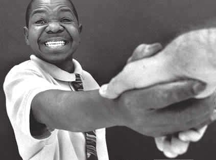
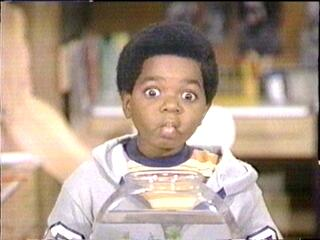
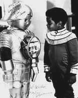
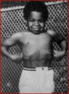
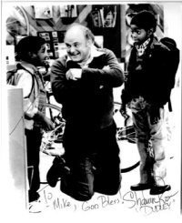
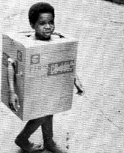
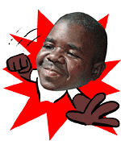

|
Gary Coleman"You know, somehow, some way, we need to get this state back in shape. Back in order. And someone like me, someone who's new and not a politico, [is] going to shake the trees and poke the bushes, and needs to be in there." Everyone who's sick and tired of Gary Coleman, raise your hand. Every time you turn around, there he is with his fucking face plastered onto a new and different canvas. Hey look - someone's made a sticker out of him! Now he's an animated gif! We should totally make a unauthorized T-shirt containing Gary Coleman's likeness hovering atop the phrase BLING BLING in a funny pimp font and whore it out on Cafepress. Then let's Photoshop together a picture of David Hasselhoff clutching an Atari joystick poking out of Erik Estrada's police shorts. Is that all the food groups? For twenty-five years, the world's been inescapably awash in shticky Coleman merchandise, and the ongoing California recall election confirms it won't be disappearing any time soon. The East Bay Express, an Emeryville-based alternative weekly has posted his $3,500 filing fee and performed all the prerequisite paperwork needed to get Gary Coleman on the governor's ballot. Sources at the paper insist Coleman's got a "Clintonesque" charisma - and on October first, Gary Coleman and adult film star Mary Carey will "debate" the issues on the Game Show Network. Gee, now there's a rivalry that goes way back. Who Wants to Be Governor of California? will award the maximum corporate campaign contribution allowed by law - $21,000 - to Mary or Gary. Everything from woeful (but legitimate) Diff'rent Strokes TV memorabilia to a smattering of recently manufactured (but faux-faded) Gary Coleman lunch boxes, bobbleheads and bumper stickers blossom across the American landscape like never before. The Coleman nostalgia-revival phenomenon is a relentless, dunderheaded machine with one singular purpose: to actively fellate and destroy everyone on Earth who insists upon celebrating the 1980s. Constituents of every age group have latched on to Coleman's diminutive stature, impish bouffant, and chubby-cheeked, eternally pre-teen potato pout. One draining side effect is that today's top journalists are presently running "short" of ways to call attention to Coleman's height - which has held firmly at four feet, eight inches for two decades. NBC, The SF Chronicle, E! Entertainment News, TechTV, and Fox continue to describe the thirty-five year old Mr. Coleman as "pint-sized". Before the man, there was the boy. Prior to his fifth birthday, Gary Wayne Coleman underwent three separate operations to conquer lupus nephritis - an inflammation of the kidneys and a disease of the immune system which proved advantageous to his acting career. At age nine, he could still pass for a five year old. He would never grow taller than 4'8", and to this day he remains on dialysis. He's experienced continued kidney malfunction and two failed transplants. Of his childhood celebrity status he muses, "once you're there, you're there until death. There's no release from the spotlight." His parents steered him toward primarily black sitcoms like Good Times and The Jeffersons. After a string of excellent luck, they steered him toward primarily white sitcoms like Facts of Life and Buck Rogers in the 25th Century. The first episode of Diff'rent Strokes aired in 1978. Theme song lyrics and music written by Alan Thicke. Conrad Bain plays multi-millionaire Phillip Drummond, who agrees to the death-bed wish of his housekeeper: he'll raise her two small sons as his own, welcoming 8-year-old Arnold (Gary Coleman) and 12-year-old Willis (Todd Bridges) into his lavish penthouse alongside daughter Kimberly (Dana Plato). This premise took place long before popular interracial gangbangery like the Blacks on Blondes franchise or Dogfart vidcaps. At the top of his form, Coleman was earning $70,000 a week. Since that time, he has yet to tackle a dramatic role meant to eclipse his portrayal of Arnold Jackson, and he runs the risk of being forever typecast as the little boy who takes off his shirt to play Tarzan with Maytag repairman (and WKRP in Cincinnati star) Gordon Jump. Diff'rent Strokes #114: The Bicycle Man. Unaware that he's being lured into the carefully crafted trap of a child molester, Arnold eagerly agrees to perform a simple task in return for an overly generous reward from a "friendly" neighborhood merchant. With Gordon Hump as Mr. Horton and Shavar Ross as Dudley. (Cc, Stereo) But Mr. Molester Man wasn't the only one misfondling Arnold's ample assets. Coleman's mother and father misappropriated his entire $3.8 million dollar trust fund, and Coleman joined the ranks of actors like Macaulay Culkin, successfully suing his own parents. Coleman won a judgment in court for $1,280,000. Health and financial issues eventually forced Coleman to concede that he was
indeed worse than broke - he was $72,000 in debt and addicted to the
assembly of hobbyist model trains. Coleman has promised not to spend any money wooing voters. Nor will he accept any contributions or donations. He won't even actively campaign, which leads many observers to wonder if a "do nothing" candidate is really what California needs at this critical juncture. He's openly candid about his stance on marijuana: "There's been medical marijuana ever since there's been medicine. Nobody gets hurt, so why not? People still smoke marijuana, and they still go to work. There's no drug-related crime and robberies and murders in countries like, oh - lemme pull one out of my ass here - Denmark. Or Belgium." He approves of homosexuals, but the only legitimate background resource presently available to voters (apart from Coleman's criminal record) is an examination of his conduct from 1978 to 1986 - the Arnold Jackson years. Let's take a look. DS
#5: The Spanking. DS
#6: Goodbye Dolly. DS
#7: The Trial. DS
#70: Almost American. DS
#99: Shoot-Out at the O.K. Arcade. DS
#104: Substitute Teacher. DS
#123: Mr. T and mr. t. DS
#131: Assert Yourself. DS
#165: Cheers
to Arnold. DS
#178: So You
Want to Be a Rock Star.
DS
#180: Arnold's
Bad Rap. DS
#185: Arnold's
Tangled Web.
The real scandal took place July 30, 1998, while Coleman was shopping at a uniform supply store for a bulletproof vest,. A 205-pound woman named Tracey Fields started screaming at him for a personalized autograph. He obliged her, but that wasn't sufficient. As he walked away, she hollered, "Ain't you gonna put something nice on it?!" Coleman was annoyed and taken aback by her persistence. Court TV's Bryan Robinson has the scoop: "I thought, 'That's
really rude. I didn't like that,'" Coleman said. "But I didn't think
anything of it. I told her, 'You really don't need that. You're just going to
show it off to your friends. That's really my signature'" So Coleman punched her in the right eye. Shopkeepers claimed he continued pummeling the woman until an off-duty cop pulled them apart. After a full day on the witness stand, Coleman abruptly (and tearfully) copped a plea, ending the trial. With his attorney Adam London clutching him on the shoulder, Coleman blew his nose as he received a 90-day suspended sentence, a $400 fine and a $1,180 penalty assessment fee. He was also ordered by Commissioner Ulysses Burns to take 52 anger management classes. Will Governor Gray Davis receive a blackened eye as well? (In addition to the one he's already got, that is). Will a landslide win for Gary Coleman really result in smaller government? "I am worth more than any gold in any reserve," Coleman states. "I'm here, I'm alive and I'm going to survive this and any other atrocity that may come up in my life." When asked by Howard Stern if he's had ever oral sex, an outraged Gary replied, "No! That's not a place for a young woman's face to be." Timeline
|
 Lying,
scheming, drinking and womanizing? These characteristics aren't altogether
incongruous with post-dot-com California politics, but they're a revealing portrait
nonetheless. Gary versus Gray, eh? Davis was a junior high school pass monitor,
Coleman worked as a security guard. Davis thinks class size matters, Coleman
believes size never matters. Davis is synonymous with rolling blackouts, while
Coleman remains rockin' and blackilicious. Gary Coleman for Governor of California?
He may not be a pro - but at least he's not a con. I'm talkin' bout choo,
Davis!
Lying,
scheming, drinking and womanizing? These characteristics aren't altogether
incongruous with post-dot-com California politics, but they're a revealing portrait
nonetheless. Gary versus Gray, eh? Davis was a junior high school pass monitor,
Coleman worked as a security guard. Davis thinks class size matters, Coleman
believes size never matters. Davis is synonymous with rolling blackouts, while
Coleman remains rockin' and blackilicious. Gary Coleman for Governor of California?
He may not be a pro - but at least he's not a con. I'm talkin' bout choo,
Davis!